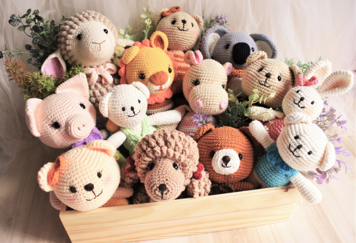
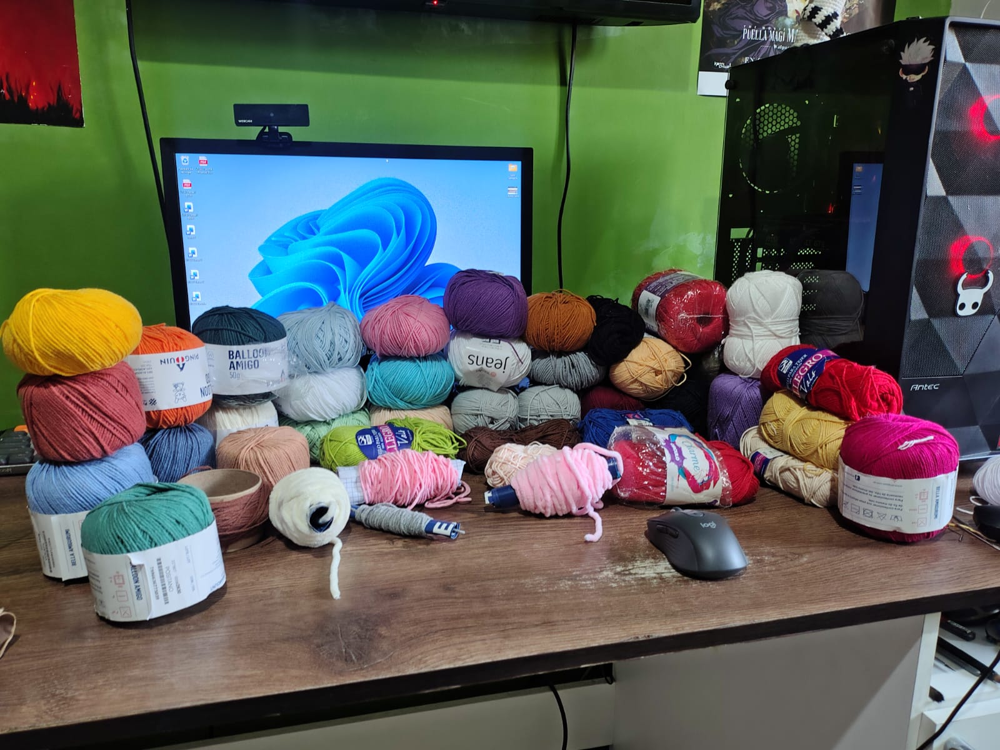

Bienvenido a InuGurumi
Durante este 2026 empece a aprender a crear amigurumis y tejidos a crochet, este sitio web es un espacio donde comparto este hobby, los trabajos que he realizado, como los he hecho y que materiales he usado, ademas de los lugares en donde los compre.
Algunos de los pedidos que he recibido son personajes de la cultura pop como Harry Styles, anime como Luffy y algunos utilitarios creativos como bolsos, carteras o portalatas.

Explorar mis tejidos¿Que es un Amigurumi?
Un amigurumi es una figura tejida, generalmente a crochet, que se rellena para darle volumen. Puede representar animales, personas, personajes u objetos. Sus formas se construyen combinando puntos, aumentos y disminuciones.
Elegir los colores, preparar las piezas y bordar los detalles permite dar una expresión diferente a cada creación.
Materiales Necesarios
- Ganchillo: del tamaño adecuado para el grosor del hilo.
- Hilo o lana: en los colores necesarios para el diseño.
- Relleno sintético: para dar forma y volumen a las piezas.
- Marcadores de puntos: para identificar el inicio de cada vuelta.
- Aguja lanera o agujeta: para unir piezas y esconder los extremos del hilo.
- Tijeras: para realizar cortes limpios al terminar.
- Alfileres: para presentar las piezas antes de coserlas.
Estos son los materiales que normalmente uso para crear amigurumis, aunque algunos proyectos pueden necesitar otros materiales extra según el diseño como bases, ojos de seguridad, accesorios, etc.
Mi espacio de trabajo

Cada amigurumi y tejido que hago cobra vida en un rincón de mi casa organizado para realizarlos.
Mi espacio cuenta con una estación de trabajo optimizada en un escritorio de 1.50 m de largo por 0.60 m de ancho y 0.73 m de alto, diseñado para mantener al alcance los materia de cada proyecto
Conoce el proceso